RMSNorm：保留尺度约束，拿掉均值中心化
Root Mean Square Layer Normalization
Biao Zhang、Rico Sennrich · University of Edinburgh / University of Zurich · NeurIPS 2019
精读版本：1910.07467v1，14 页（正文、参考文献与完整附录）。arXiv 提交：2019-10-16。阅读与更新：2026-10-27。
Paper PDF · arXiv · DOI · Official Code · Original TeX
TL;DR：归一化需要约束什么？
一段话理解：LayerNorm 同时把向量拉到零均值、单位标准差。作者提出，真正关键的可能是尺度约束；均值归零在许多任务里可以省略。RMSNorm 直接除以二阶矩的平方根，保留正比例缩放不变性，但失去平移不变性。pRMSNorm 再只用固定前缀估计分母。论文用梯度分析解释这一取舍，用翻译、实体填空、图文检索和图像分类检查质量与速度。今天它已进入 Llama 等模型的实现，工程瓶颈也从“少一个统计量”走向归约、融合、带宽与 launch 开销。
五个关键点：
- RMS 不是标准差。 RMS² = variance + mean²；均值不为零时，两种归一化会产生不同方向与尺度的输出。
- 不变性有条件。 全向量正比例缩放、无 epsilon、同样的 gain/bias 才得到严格等式；负比例缩放会翻转符号，单个神经元缩放也不保持输出。
- 梯度不是逐维独立的。 RMS 的分母让同一 token 的所有通道通过一个点积耦合；高效 backward 不需要生成 D×D Jacobian。
- 6.25% 指参与分母估计的元素。 所有元素仍参与输出、gain 与后续层计算。pRMSNorm 没有把整个算子或模型缩小到 1/16。
- 7%–64% 是历史训练耗时降幅范围。 最高 63.9% 属于 Theano 图文检索的 pRMSNorm；不能换算成现代 LLM 的 TTFT／TPOT 保证。
适合已有矩阵运算与反向传播基础、想理解归一化机制及 per-op 性能的读者。主线严格按原文 §1–§7、附录 A.1–A.4 展开，之后再做独立审计与扩展研究。全部 7 张 Figure 和 10 个 Table 编号均保留；Table 9 原本就是曲线图。 原论文事实、外部来源和本文解释在正文明确区分。
1. Introduction：每步更有效，也可能每步更慢
原文 §1，PDF pp.1–2。 深层模型的输入分布会随着前层参数更新而变化。LayerNorm 通过局部统计改善训练，尤其适合 batch 统计不稳定的 RNN。但论文的起点是一个系统问题：收敛步数减少，不必然等于墙钟时间减少。

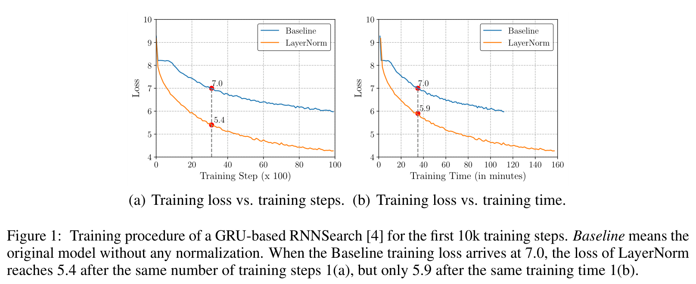
Training procedure of a GRU-based RNNSearch for the first 10k training steps. Baseline means the original model without any normalization. When the Baseline training loss arrives at 7.0, the loss of LayerNorm reaches 5.4 after the same number of training steps (a), but only 5.9 after the same training time (b).
Click to zoom · Full PDF page
Figure 1 — 步数与时间是两种横轴。 两个面板展示 GRU RNNSearch 的前 10k 训练步骤；纵轴都是 training loss，越低越好。(a) 以 step 为横轴，Baseline 到 7.0 时 LayerNorm 到约 5.4；(b) 以 seconds 为横轴，同样时间里 LayerNorm 只到约 5.9。曲线的组成是同一模型的无归一化与 LayerNorm 两种训练过程，没有额外网络数据流箭头。先对齐纵轴，再对齐横轴单位，才能读出“优化效果被运行开销抵消了一部分”。
关键观察： 这张图证明要检查 time-to-quality，而非只比较 loss/step。它并没有直接测 RMSNorm，也没有证明所有 LayerNorm kernel 都很慢；后续实验才比较新方法。RNN 的时间依赖会使许多小归一化沿序列串行发生，归约与调度开销反复进入关键路径。
作者的假设是：LayerNorm 的 re-scaling invariance 更关键，而 re-centering invariance 的贡献可以较小。贡献有三层：提出 RMSNorm；证明输出与梯度的尺度性质；探索 pRMSNorm，并跨任务／框架验证质量与训练时间。应把“中心化可以省略”理解为一个得到实验支持的设计假设，不能提升成所有模型的必要充分条件定理。
2. Related Work：统计对象比“有没有 Norm”更重要
原文 §2，PDF p.2。 BatchNorm 用 batch 的统计值，所以 mini-batch 大小、样本相关性与训练／推理统计切换都会影响行为。LayerNorm 对单样本的某一层特征归一化，避免依赖 batch；这让它适合循环网络与序列模型。WeightNorm 则重参数化权重，把向量方向和长度分开，不直接计算每个 token 的激活统计。
原文还讨论了 GroupNorm、对归一化解释的争论，以及不同范数的探索。这里最容易混淆的是三种“尺度”：权重向量的范数、单个 token 的特征范数、一个 batch 中同一特征的方差。它们的轴不同，不变性也不同，不能只凭名称里的 Norm 相互替换。
本文解释： RMSNorm 的改动很小，却有明确的机制选择：依然归一化激活，依然每个样本独立，依然训练 gain；删除的是均值中心化。它不依赖新增 loss、辅助网络或数据标注。2019 年的价值在于把一个常见组合中的两个功能拆开验证；今天看起来“只少一次 mean”是因为这个选择后来变得常见。
3. Background：先重构 LayerNorm 的输入和输出
原文 §3，PDF p.3。
Copy LaTeX
a_i = \sum_{j=1}^m{w_{ij} x_j},\quad y_i = f\left(a_i + b_i\right),W ∈ Rⁿˣᵐ，x ∈ Rᵐ，a = Wx ∈ Rⁿ，b ∈ Rⁿ，f 为逐元素激活。第 i 行权重与输入做点积生成 aᵢ，再加 bᵢ、进入 f。论文的归一化对象是线性求和结果 a，不是权重 W，也不是先加 bias 后的任意张量。
Copy LaTeX
\bar{a}_i = \frac{a_i - \mu}{\sigma} g_i, \quad y_i = f\left(\bar{a}_i + b_i\right),Copy LaTeX
\mu = \frac{1}{n}\sum_{i=1}^{n} a_i, \quad \sigma = \sqrt{\frac{1}{n}\sum_{i=1}^{n}(a_i - \mu)^2}.g ∈ Rⁿ 是可学习 gain，初始值为 1；b 初始值通常为 0。μ、σ 都是单个向量上的标量；除法和 gain 相乘广播到 n 个元素。原公式没有 epsilon，σ² 的除数是 n，属于总体方差。
计算顺序是：a → 均值 μ → a−μ → 平均平方差 → 开方 σ → 除法 → gain → bias → f。理想中心化核心的均值为 0、方差为 1；经过不均匀 gain 和 bias 后，最终输出一般没有这两个性质。
现代 Transformer 通常把输入直接写作 X ∈ Rᴮˣᵀˣᴰ，将 B、T 展平为 M=B×T 行，每行在 D 上归一化。此时论文 n 对应 D，m 是前一线性层输入维；不要和 sequence length 混用。RNN 中相同操作位于每个 timestep 的门控映射内，具体 placement 比符号本身更重要。
4. RMSNorm：把半径固定，允许均值保留
原文 §4，PDF pp.3–5。
Copy LaTeX
\begin{aligned}& \bar{a}_i = \frac{a_i}{\text{RMS}(\mathbf{a})} g_i, \quad \text{where}~~ \text{RMS}(\mathbf{a}) = \sqrt{\frac{1}{n} \sum_{i=1}^{n} a_i^2}.\end{aligned}先逐元素平方 aᵢ，再对 n 求平均、开方得到一个 r=RMS(a)，用同一个 r 除每个元素，最后乘 gain。输入／输出均为 [n]，统计量为 scalar，g 为 [n]；batched 版本统计量为 [M,1]，gain 为 [D]。
由于 sum(aᵢ²)=n r²，在 r>0、无 epsilon 时 z=a/r 满足 sum(zᵢ²)=n，因此位于半径 √n 的球面。球面约束成立在 gain/bias 之前。它并没有把每个元素压到 [−1,1]：一个分量可以达到 √n，其余为零。用 L2 norm 会得到半径 1，比 RMSNorm 的每维典型量级小 √n；论文的 L2 实验没有重新调好所有补偿因素，不能据此宣称 L2 在任何网络中都无效。
由二阶矩展开，RMS²(a)=σ²(a)+μ²(a)。μ=0 时 RMSNorm 与 LayerNorm 的核心相同；μ≠0 时分母更大，且 RMSNorm 不减均值。RMSNorm 不强制 variance=1，而是强制 second moment=1。
示意图将两条路径的统计量与 affine 操作并排展开。箭头表示张量依赖；这不是 2019 年的 kernel profiler trace，也不意味着实现一定启动图中那么多个 kernel。编译器可以把多个节点融合进同一个程序。
4.1 Invariance Analysis：哪些变化能被抵消？
Copy LaTeX
\mathbf{y} = f\left(\frac{\mathbf{Wx}}{\text{RMS}(\mathbf{a})} \odot \mathbf{g} + \mathbf{b}\right),v 是 f 内部的 affine 后向量。统一将 W 或 x 乘 δ>0，a 与 RMS(a) 同时乘 δ，分子分母抵消；g、b 与 f 保持不变时输出保持不变。
Copy LaTeX
\text{RMS}(\alpha\mathbf{x}) = \alpha \text{RMS}(\mathbf{x}),Copy LaTeX
\mathbf{y}^\prime = f\left(\frac{\mathbf{W^{\prime}x}}{\text{RMS}(\mathbf{a}^\prime)} \odot \mathbf{g} + \mathbf{b}\right) = f\left(\frac{\delta\mathbf{Wx}}{\delta\text{RMS}(\mathbf{a})} \odot \mathbf{g} + \mathbf{b}\right) = \mathbf{y}.这里 W′=δW、a′=W′x。缩放某一行 wᵢ 会只改变一个 aᵢ，分母则由全部元素决定，其他分量也受到影响，因此单行／逐通道不同倍数缩放不具备同样不变性。

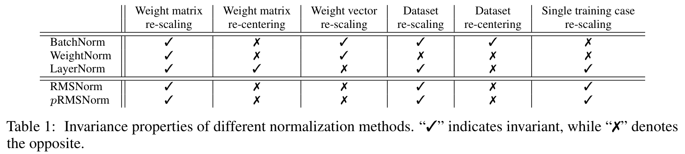
Invariance properties of different normalization methods. ``cmark'' indicates invariant, while ``xmark'' denotes the opposite.
Click to zoom · Full PDF page
Table 1 · 完整行列转录（分组标题展开，空白值按原文保留）
| Method | Weight matrix re-scaling | Weight matrix re-centering | Weight vector re-scaling | Dataset re-scaling | Dataset re-centering | Single training case re-scaling |
|---|---|---|---|---|---|---|
| BatchNorm | ✓ | ✗ | ✓ | ✓ | ✓ | ✗ |
| WeightNorm | ✓ | ✗ | ✓ | ✗ | ✗ | ✗ |
| LayerNorm | ✓ | ✓ | ✗ | ✓ | ✗ | ✓ |
| RMSNorm | ✓ | ✗ | ✗ | ✓ | ✗ | ✓ |
| pRMSNorm | ✓ | ✗ | ✗ | ✓ | ✗ | ✓ |
Table 1 — 按列定义扰动。 每列是对权重矩阵、单行权重、整数据集或单训练样本的某类缩放／中心化；✓／✗ 不是质量好坏。LayerNorm 与 RMSNorm 唯一不同的这一列是 weight-matrix re-centering，而非“所有输入平移”都受保护。把 W 的每行减去同一个向量会在 a 的各分量上形成共同偏移，LayerNorm 可以消掉；将 x 加任意向量则经 W 生成非均匀偏移，所以表中 dataset re-centering 仍为 ✗。
此表来自原论文分析，隐含非退化输入、统一正尺度和理想统计。现实实现的 epsilon 会破坏严格缩放等式：sqrt(δ²r²+ε) 不能约掉 δ。r²远大于ε时才近似成立。这个差异也解释了接近零的输入为什么需要单独测试。
AGENT-CREATED / NORMALIZATION EXPLORER
均值留下之后，输出怎么变？
基向量默认为 [−3,−1,1,3]；输入 = scale × base + shift。gain=1、bias=0；epsilon 加在平方根内。
| i | Input | LN | RMS | pRMS |
|---|---|---|---|---|
| 1 | −3 | −1.3416 | −1.3416 | −1.3416 |
| 2 | −1 | −0.4472 | −0.4472 | −0.4472 |
| 3 | 1 | 0.4472 | 0.4472 | 0.4472 |
| 4 | 3 | 1.3416 | 1.3416 | 1.3416 |
实验台把相同输入同时送入 LN、RMSNorm 与固定前缀 pRMSNorm，展示每个输出分量、分母和样本数。它用于理解代数，不拟合训练结果。先增加均值偏移看 LN 保持输出、RMS 改变；再改变正尺度看 epsilon=0 时 RMS 保持；最后选择前缀反例观察 pRMSNorm 的分母失真。
4.2 Gradient Analysis：尺度约束如何进入更新？
Copy LaTeX
\begin{aligned}& \frac{\partial \mathcal{L}}{\partial \mathbf{b}} = \frac{\partial \mathcal{L}}{\partial \mathbf{v}}, \quad \frac{\partial \mathcal{L}}{\partial \mathbf{g}} = \frac{\partial \mathcal{L}}{\partial \mathbf{v}} \odot \frac{\mathbf{Wx}}{\text{RMS}(\mathbf{a})},\end{aligned}设 q=∂L/∂v ∈ Rⁿ，u=g⊙q ∈ Rⁿ，r=RMS(a)。bias 的梯度为 q，gain 的梯度为 q⊙a/r。讨论缩放不变时，作者也隐含下游计算及上游 q 不变；如果别的支路使用未归一化 a，不能单独套这个局部结论。
Copy LaTeX
\begin{aligned}& \frac{\partial \mathcal{L}}{\partial \mathbf{W}} =
\sum_{i=1}^n \left[\mathbf{x}^T \otimes \left(\text{diag}\left(\mathbf{g} \odot \frac{\partial \mathcal{L}}{\partial \mathbf{v}} \right) \times \mathbf{R}\right)\right]_{i}, \text{where}~~ \mathbf{R} = \frac{1}{{\text{RMS}(\mathbf{a})}} \left(\mathbf{I}-\frac{\left(\mathbf{Wx}\right)\left(\mathbf{Wx}\right)^T}{n\text{RMS}(\mathbf{a})^2}\right),\end{aligned}原 Eq.9 用 Kronecker product、diag 和下标求和表达 W 的梯度。这里 R ∈ Rⁿˣⁿ 是 a/r 对 a 的 Jacobian；I 为单位矩阵，aaᵀ 为 outer product，xᵀ ∈ R¹ˣᵐ。原式的 [·]ᵢ 索引约定不够清晰，因此工程实现使用下面等价、shape 明确的重构：
Copy LaTeX
R=\frac{I}{r}-\frac{aa^T}{nr^3},\qquad
\frac{\partial L}{\partial a}=\frac{u}{r}-\frac{a(a^Tu)}{nr^3},\qquad
\frac{\partial L}{\partial W}=\left(\frac{\partial L}{\partial a}\right)x^T.第一项是各维梯度按 1/r 缩放；第二项减掉沿 a 方向的分量。因为 aaᵀ/(nr²) 是径向投影，R 会消掉改变整个向量长度的局部扰动，保留切向方向变化。无需创建 n×n 矩阵：先算一个点积 aᵀu，再做向量运算，backward 是 Θ(n)，W 梯度再由 [n,1]×[1,m] 生成 [n,m]。
Copy LaTeX
\begin{aligned}\mathbf{R}^\prime & = \frac{1}{{\delta \text{RMS}(\mathbf{a})}} \left(\mathbf{I}-\frac{\left(\mathbf{\delta Wx}\right)\left(\mathbf{\delta Wx}\right)^T}{n\delta^2 \text{RMS}(\mathbf{a})^2}\right) = \frac{1}{\delta}\mathbf{R}. \\\end{aligned}δ>0 时 R′=R/δ。缩放 x 会让 R 的 1/δ 与 outer product 中 x 的 δ 抵消，W 梯度不变；缩放 W 时 x 不变，W 梯度缩小到 1/δ。固定学习率 η 的 vanilla SGD 下，参数相对长度的有效变化还会按约 1/δ² 缩小，这就是“implicit learning-rate adaptation”的直观来源。
带内部 epsilon 的实际 backward 中令 r=sqrt(mean(a²)+ε)，仍是 u/r−a(aᵀu)/(nr³)，但 Ra 不再严格为零。这是数值稳定与精确不变性之间的取舍。该梯度已用独立的中心差分验证。
5. pRMSNorm：少看分母，仍然处理整个向量
原文 §5，PDF p.5。 作者提出用前 k 个元素估计 RMS：
Copy LaTeX
\overline{\mathrm{RMS}}(a)=\sqrt{\frac{1}{k}\sum_{i=1}^{k}a_i^2},
\qquad k=\lceil n p\rceil,\qquad
z_i=\frac{a_i}{\overline{\mathrm{RMS}}(a)}\quad(i=1,\ldots,n).这里 p 用 [0,1] 比例表示；p=6.25% 即 0.0625。论文文本说 “first-p%”，不是随机抽样，不是 top-k，也不是每个元素各自用局部统计。输出 shape 仍 [n]，gain 长度仍 n。平方归约从 n 项降到 k 项；读取和写出所有输出元素的工作仍在。
固定前缀也具有正尺度同次性，所以 Table 1 的理想不变性保持。但“同次性”只保证统一缩放可抵消，不保证分母接近完整 RMS。即使元素是 i.i.d.，对均方的估计无偏也不代表开方后的 RMS 无偏；固定前缀若具有不同分布，还会引入系统性偏差。原文承认估计不精确，小样本可能导致梯度不稳定；正文 “small m” 与此段定义的 k/n 不一致，应理解为小估计集合。
一个确定性反例：a=[1,1,100,100]，p=50%，前缀 RMS=1，完整 RMS≈70.714。pRMS 输出后两维都是 100，完整 RMS 输出约 1.414；小分母放大输出以及梯度。LLM 的 outlier 通道、MoE 分布差异或非随机 hidden layout 让“前缀代表整体”的假设尤其需要验证。
本文补充推导： 设 s=sumᵢ aᵢuᵢ，pRMS 的 backward 为 daⱼ=uⱼ/r−1{j≤k}aⱼs/(kr³)。所有输出的梯度都进入 s，但只有前缀输入还承担分母导数项。前缀与后缀受到不同训练作用；交换通道排列也可能改变输出，完整 RMS 则对通道置换保持等变性。
因此 pRMSNorm 的工程收益取决于统计归约是否真正是瓶颈。切片可能引入 kernel、copy 或不合适的布局，理论算术减少不能自动转为 wall-clock 加速。论文中 pRMS 比完整 RMS 更慢的 case 正是这条证据。
6. Experiments：先看质量，再看统一口径的时间
原文 §6，PDF pp.5–9。 未另说明时使用 TITAN X Pascal，计时是 3 次运行的均值与标准差。Transformer 改用 Tesla V100，CIFAR 改用 RTX 2080 Ti。论文横跨 TensorFlow、Theano、PyTorch，多样性有帮助，但不同框架 baseline 的细节也有差异，不能跨表把时间直接相除。
本文统一使用 耗时降幅=(tLN−tnew)/tLN，加速倍数=tLN/tnew。原表括号的百分比按前者保留。更低的 time 与 error 更好，更高的 BLEU 与 Recall 更好；未标注方向的原表不擅自改写，方向在解释中补充。
6.1 Machine Translation：RNN 与 Transformer 的收益不相同
WMT14 En→De；原文 §6.1，PDF pp.6–7。 RNNSearch 在 recurrent connections 与 feed-forward layers 中加入归一化；Transformer 使用 base setting、训练 300k steps。配置详情见附录 A.1。

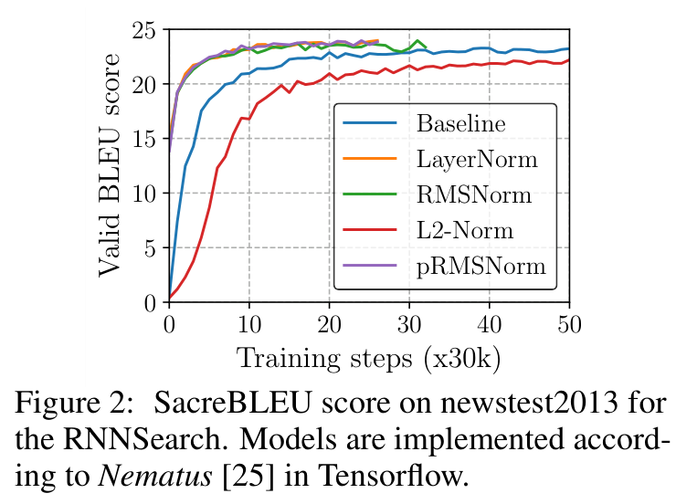
SacreBLEU score on newstest2013 for the RNNSearch. Models are implemented according to Nematus in Tensorflow.
Click to zoom · Full PDF page
Figure 2 — TensorFlow RNNSearch 的开发集 BLEU。 横轴为 training steps（每 30k 评估一次），纵轴为 newstest2013 SacreBLEU。先比较达到同一 BLEU 的步数，再比较平台值：LayerNorm、RMSNorm 与 pRMSNorm 比 Baseline 更快收敛，L2-Norm 较弱。图中没有时间横轴，因此不能仅凭曲线宣布实际更快；需要 Table 2。

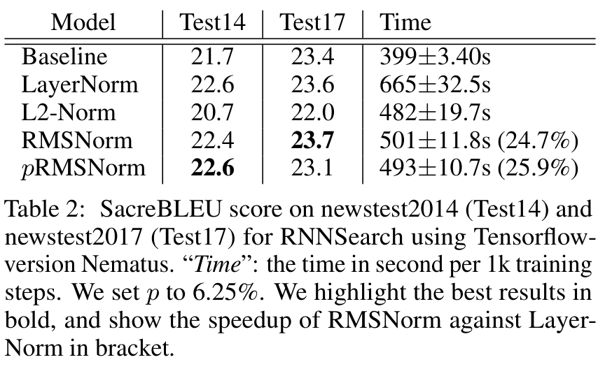
SacreBLEU score on newstest2014 (Test14) and newstest2017 (Test17) for RNNSearch using Tensorflow-version Nematus. ``Time'': the time in second per 1k training steps. We set p to 6.25%. We highlight the best results in bold, and show the speedup of RMSNorm against LayerNorm in bracket.
Click to zoom · Full PDF page
Table 2 · 完整行列转录（分组标题展开，空白值按原文保留）
| Model | Test14 | Test17 | Time |
|---|---|---|---|
| Baseline | 21.7 | 23.4 | 399±3.40s |
| LayerNorm | 22.6 | 23.6 | 665±32.5s |
| L2-Norm | 20.7 | 22.0 | 482±19.7s |
| RMSNorm | 22.4 | 23.7 | 501±11.8s (24.7%) |
| pRMSNorm | 22.6 | 23.1 | 493±10.7s (25.9%) |
Table 2 — 相近质量，更低训练耗时。 完整 RMS 相对 LN 的 Test14 为 −0.2 BLEU，Test17 为 +0.1；501 s 相对 665 s，降幅 24.66%，加速 1.327×。pRMS 的 Test14 持平、Test17 为 −0.5；493 s 降幅 25.86%，加速 1.349×。二者都比无归一化 Baseline 的 399 s 慢。作者称收敛步数约减少 50%，需要把每步成本与达标步数结合，才得到训练预算意义。
L2 不是最强 baseline：它只有 20.7／22.0 BLEU，且论文脚注承认前人只对最后一层使用 L2 并调尺度，本实验不是该方法的完整复现。不能将差结果归因于范数本身而忽略 placement 与调参。

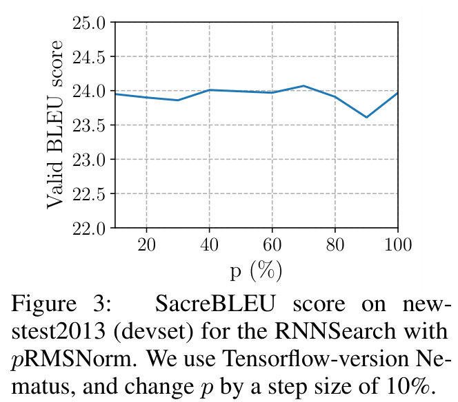
SacreBLEU score on newstest2013 (devset) for the RNNSearch with pRMSNorm. We use Tensorflow-version Nematus, and change p by a step size of 10%.
Click to zoom · Full PDF page
Figure 3 — p 的消融。 横轴是 partial ratio，纵轴是开发集 BLEU；TensorFlow Nematus 以 10% 步长改变 p。各点接近说明此 RNNSearch 配置对 p 不太敏感，但图没有多 seed 质量方差，也不是所有比率都充分测试。6.25% 是随后采用的设置，不能宣称图中每个点都直接证明 6.25% 最优。原 §6.1 的文字误指 Figure 7，PDF 实际对应本图；TeX 使用了重复 label。

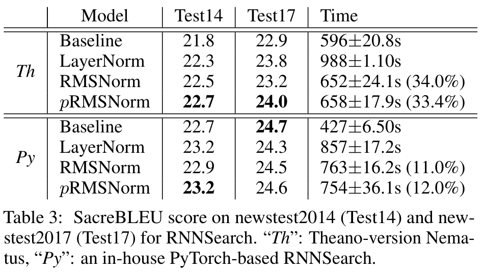
SacreBLEU score on newstest2014 (Test14) and newstest2017 (Test17) for RNNSearch. ``Th'': Theano-version Nematus, ``Py'': an in-house PyTorch-based RNNSearch.
Click to zoom · Full PDF page
Table 3 · 完整行列转录（分组标题展开，空白值按原文保留）
| Framework | Model | Test14 | Test17 | Time |
|---|---|---|---|---|
| Th | Baseline | 21.8 | 22.9 | 596±20.8s |
| Th | LayerNorm | 22.3 | 23.8 | 988±1.10s |
| Th | RMSNorm | 22.5 | 23.2 | 652±24.1s (34.0%) |
| Th | pRMSNorm | 22.7 | 24.0 | 658±17.9s (33.4%) |
| Py | Baseline | 22.7 | 24.7 | 427±6.50s |
| Py | LayerNorm | 23.2 | 24.3 | 857±17.2s |
| Py | RMSNorm | 22.9 | 24.5 | 763±16.2s (11.0%) |
| Py | pRMSNorm | 23.2 | 24.6 | 754±36.1s (12.0%) |
Table 3 — 框架依赖明显。 Theano 中 RMS 的 988→652 s 为 34.01% 降幅、1.515×，Test14 +0.2、Test17 −0.6 BLEU；pRMS 的 658 s 比完整 RMS 多 6 s，却获得 22.7／24.0 BLEU。PyTorch 中 RMS 的 857→763 s 为 10.97%、1.123×，Test14 −0.3、Test17 +0.2；Test17 最佳反而是无归一化 Baseline 的 24.7。这更支持“总体质量相近，时间可改善”，不支持“所有数据集指标全面胜出”。

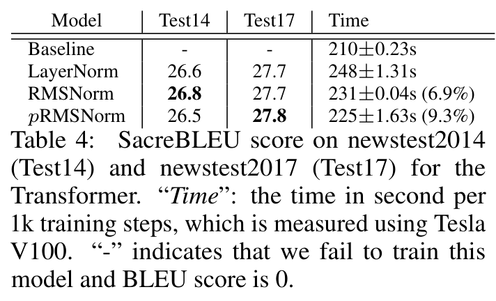
SacreBLEU score on newstest2014 (Test14) and newstest2017 (Test17) for the Transformer. ``Time'': the time in second per 1k training steps, which is measured using Tesla V100. ``-'' indicates that we fail to train this model and BLEU score is 0.
Click to zoom · Full PDF page
Table 4 · 完整行列转录（分组标题展开，空白值按原文保留）
| Model | Test14 | Test17 | Time |
|---|---|---|---|
| Baseline | − | − | 210±0.23s |
| LayerNorm | 26.6 | 27.7 | 248±1.31s |
| RMSNorm | 26.8 | 27.7 | 231±0.04s (6.9%) |
| pRMSNorm | 26.5 | 27.8 | 225±1.63s (9.3%) |
Table 4 — Transformer 的成本占比更低。 RMS 的 248→231 s 为 6.85%、1.074×；pRMS 的 225 s 为 9.27%、1.102×。RMS Test14 +0.2 BLEU、Test17 持平。Baseline 的 “−” 表示训练失败且 BLEU 为 0，210 s 只能用于说明无 Norm 的执行时间，不能作为同质量最快方案。RNN 归一化沿时间串行，Transformer 更易并行，这是作者对收益差异的解释；缺少独立 kernel trace，尚不能把全部差异精确归因给某一次 reduction。

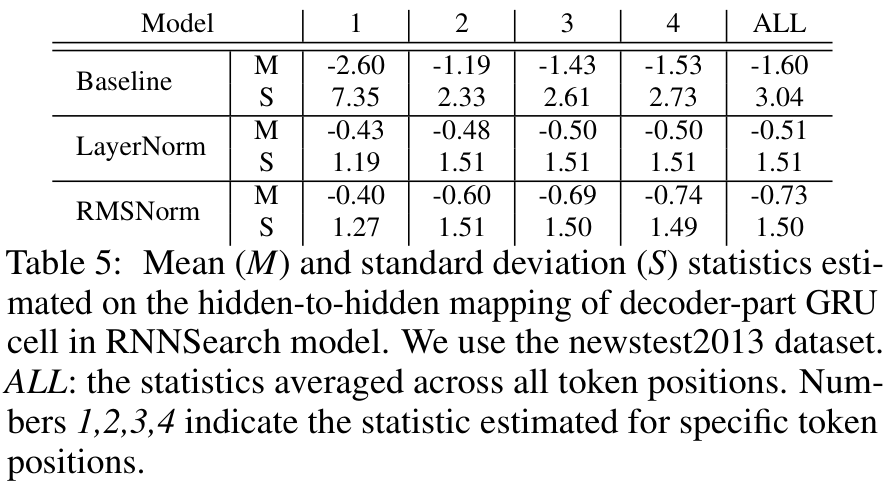
Mean (M) and standard deviation (S) statistics estimated on the hidden-to-hidden mapping of decoder-part GRU cell in RNNSearch model. We use the newstest2013 dataset. ALL: the statistics averaged across all token positions. Numbers 1,2,3,4 indicate the statistic estimated for specific token positions.
Click to zoom · Full PDF page
Table 5 · 完整行列转录（分组标题展开，空白值按原文保留）
| Model | Statistic | 1 | 2 | 3 | 4 | ALL |
|---|---|---|---|---|---|---|
| Baseline | M | −2.60 | −1.19 | −1.43 | −1.53 | −1.60 |
| Baseline | S | 7.35 | 2.33 | 2.61 | 2.73 | 3.04 |
| LayerNorm | M | −0.43 | −0.48 | −0.50 | −0.50 | −0.51 |
| LayerNorm | S | 1.19 | 1.51 | 1.51 | 1.51 | 1.51 |
| RMSNorm | M | −0.40 | −0.60 | −0.69 | −0.74 | −0.73 |
| RMSNorm | S | 1.27 | 1.51 | 1.50 | 1.49 | 1.50 |
Table 5 — 均值不归零，也能更稳定。 M=mean，S=standard deviation；列 1–4 是 token 位置，ALL 是所有位置的平均。Baseline 的 S 从 7.35 跌到约 2.3–2.7，LN 与 RMS 基本维持约 1.5；RMS 的 M 从 −0.40 逐步到 −0.74，而 LN 也不是 0。这些测量是在指定 GRU hidden-to-hidden 表示上、包含模型上下文，不能误当成“裸 LN 核心输出仍不为零”的反证。它支持 RMS 在此模型中稳定统计，但没有完整分布尾部、跨层或跨 seed 的诊断。

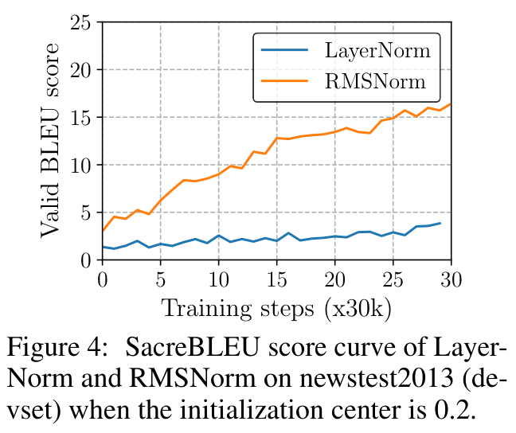
SacreBLEU score curve of LayerNorm and RMSNorm on newstest2013 (devset) when the initialization center is 0.2.
Click to zoom · Full PDF page
Figure 4 — 将权重初始化中心移到 0.2。 横轴 training steps，纵轴 dev BLEU；RMS 曲线比 LN 稳定，两者都低于正常初始化结果。先读纵轴平台，再看波动，不要把某个局部高点当最终质量。一个异常中心的 case 只能检验有限的 robustness，不能证明对任意 mean drift 都更稳；毕竟 RMS 在代数上仍不具备平移不变性。
6.2 CNN/Daily Mail Reading Comprehension：实体填空，不是摘要任务
原文 §6.2，PDF pp.7–8。 标题提 CNN/Daily Mail，实际实验训练在 CNN corpus；问题答案是 passage 中匿名化的实体。使用双向 attentive reader，top4 预处理，每篇最多 4 句。归一化只施于 LSTM，隐藏维度 240。

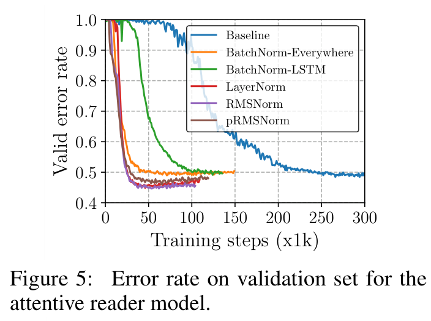
Error rate on validation set for the attentive reader model.
Click to zoom · Full PDF page
Figure 5 — 看验证错误率的下降。 横轴 training steps，纵轴 validation error，越低越好。BatchNorm-LSTM 与 BatchNorm-Everywhere 均加快收敛，LN 与 RMS 曲线更低且相近，pRMS 稍弱。legend 区分归一化方法及 BatchNorm placement；不把后者当同一个算子。图提供收敛轨迹，没有正式完整 test 指标表，也没有 TP/FP/TN/FN。

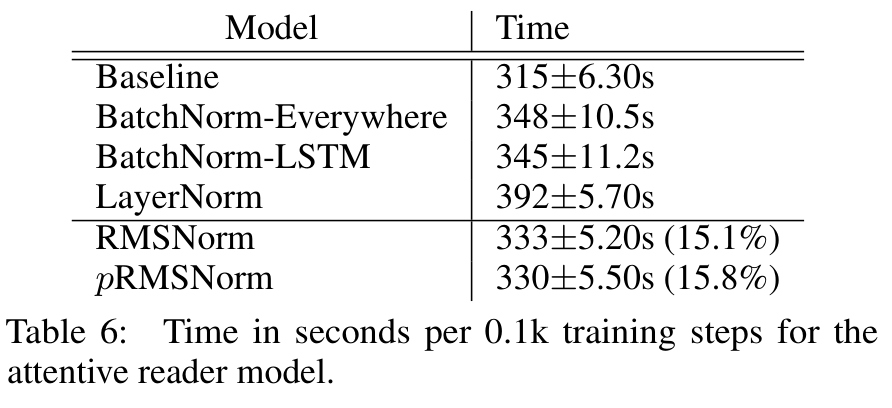
Time in seconds per 0.1k training steps for the attentive reader model.
Click to zoom · Full PDF page
Table 6 · 完整行列转录（分组标题展开，空白值按原文保留）
| Model | Time |
|---|---|
| Baseline | 315±6.30s |
| BatchNorm-Everywhere | 348±10.5s |
| BatchNorm-LSTM | 345±11.2s |
| LayerNorm | 392±5.70s |
| RMSNorm | 333±5.20s (15.1%) |
| pRMSNorm | 330±5.50s (15.8%) |
Table 6 — 每 100 steps 的时间。 RMS 392→333 s，降幅 15.05%、1.177×；pRMS 330 s，15.82%、1.188×。相对无 Norm 的 315 s 仍有开销。原脚注明确 BatchNorm 基于 cuDNN，不能直接把其 345／348 s 与其余非同等优化实现比较，进而宣布算法复杂度排名。
6.3 Image-Caption Retrieval：收益很大，也更受旧实现影响
原文 §6.3，PDF pp.8–9。 COCO 图文双向检索。OE（order embedding）用 GRU 编码文本、预训练 VGG 的 10crop 特征表示图像，以 pairwise ranking loss 学联合空间。Caption retrieval 是 image→caption，image retrieval 是 caption→image。

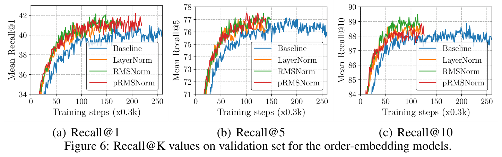
Recall@K values on validation set for the order-embedding models.
Click to zoom · Full PDF page
Figure 6 — 三个 K，同一个训练过程。 左到右为 Recall@1、@5、@10，横轴为 training steps，纵轴为 recall；每 300 steps 评估。先比较同一面板内方法，再跨面板看难度：K 越大，允许命中候选更多，Recall 通常越高。LN 与 RMS 较早到达更高曲线，RMS 在验证集略优。图不含 mean rank，也不能替代 Table 7 的测试集结果。

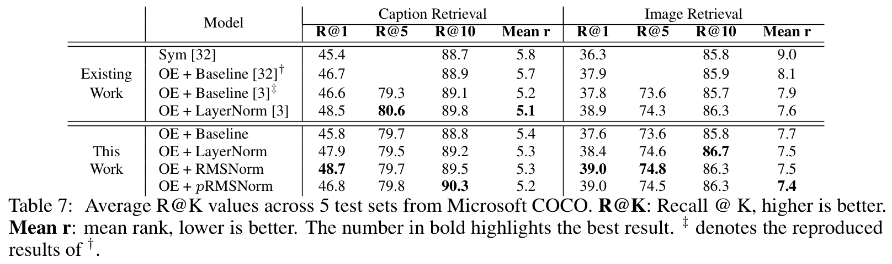
Average R@K values across 5 test sets from Microsoft COCO. R@K: Recall @ K, higher is better. Mean r: mean rank, lower is better. The number in bold highlights the best result. ‡ denotes the reproduced results of †.
Click to zoom · Full PDF page
Table 7 · 完整行列转录（分组标题展开，空白值按原文保留）
| Group | Model | Caption R@1 | Caption R@5 | Caption R@10 | Caption Mean r | Image R@1 | Image R@5 | Image R@10 | Image Mean r |
|---|---|---|---|---|---|---|---|---|---|
| Existing Work | Sym (Vendrov et al.) | 45.4 | 88.7 | 5.8 | 36.3 | 85.8 | 9.0 | ||
| Existing Work | OE + Baseline (Vendrov et al.)† | 46.7 | 88.9 | 5.7 | 37.9 | 85.9 | 8.1 | ||
| Existing Work | OE + Baseline (Ba et al.)‡ | 46.6 | 79.3 | 89.1 | 5.2 | 37.8 | 73.6 | 85.7 | 7.9 |
| Existing Work | OE + LayerNorm (Ba et al.) | 48.5 | 80.6 | 89.8 | 5.1 | 38.9 | 74.3 | 86.3 | 7.6 |
| This Work | OE + Baseline | 45.8 | 79.7 | 88.8 | 5.4 | 37.6 | 73.6 | 85.8 | 7.7 |
| This Work | OE + LayerNorm | 47.9 | 79.5 | 89.2 | 5.3 | 38.4 | 74.6 | 86.7 | 7.5 |
| This Work | OE + RMSNorm | 48.7 | 79.7 | 89.5 | 5.3 | 39.0 | 74.8 | 86.3 | 7.5 |
| This Work | OE + pRMSNorm | 46.8 | 79.8 | 90.3 | 5.2 | 39.0 | 74.5 | 86.3 | 7.4 |
Table 7 — 保留两方向的所有指标。 R@K 是正确候选进入 top-K 的查询比例，越高越好；Mean r 越低越好，不是 median rank。上半部来自 existing work，下半部才是本文自己复现的对照，前者存在实现与随机性差异，不应优先拿来算因果提升。
以 This Work 的 LN 为公平对照：RMS caption R@1 47.9→48.7，+0.8 个百分点，相对 +1.67%；image R@1 38.4→39.0，+0.6 个百分点，相对 +1.56%。Caption R@10 +0.3，但 image R@10 86.7→86.3 为 −0.4；caption Mean r 5.3 持平，image Mean r 7.5 持平。pRMS 的 caption R@1 反而是 46.8。没有一个方法在全部列严格占优；原文“better generalization”应读成总体观察。
每个测试 split 含 1000 图像、5000 captions，报告 5 个测试集合的平均；这不是 5 个训练 seed。Recall@K 的检索定义不提供完整二分类 confusion matrix，不能从表中虚构 TP/FP/TN/FN、Precision 或 F1。

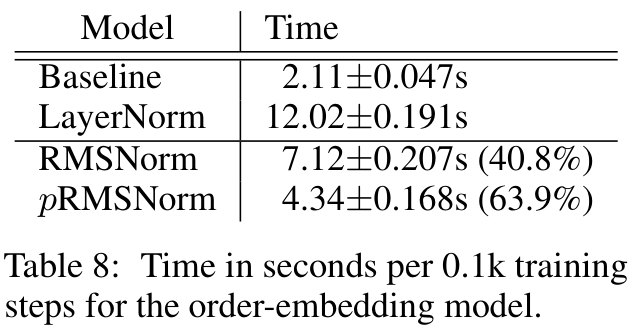
Time in seconds per 0.1k training steps for the order-embedding model.
Click to zoom · Full PDF page
Table 8 · 完整行列转录（分组标题展开，空白值按原文保留）
| Model | Time |
|---|---|
| Baseline | 2.11±0.047s |
| LayerNorm | 12.02±0.191s |
| RMSNorm | 7.12±0.207s (40.8%) |
| pRMSNorm | 4.34±0.168s (63.9%) |
Table 8 — 摘要最高数字的来源。 LN 12.02→RMS 7.12 s，为 40.77% 耗时降低、1.688×；pRMS 4.34 s 为 63.89%、2.770×。单位是每 100 steps。Baseline 仅 2.11 s，所以 pRMS 仍约 2.06×于无 Norm 时间。原文 Table 8 没有内核融合、精度、带宽、launch 或 profiler 细节；旧 Theano RNN 上的巨大 overhead 不应直接迁移到今天单 kernel 的 RMS/LN 比较。
6.4 CIFAR-10 Classification：partial approximation 的代价显现
原文 §6.4，PDF p.9。 Modified ConvPool-CNN-C；归一化沿图像 width/height，gain 和 bias 沿 channel。这里不是今天 LLM 最后一维 token RMSNorm 的同样轴。模型较小，p 调到 12.5%，不是前面通用的 6.25%。

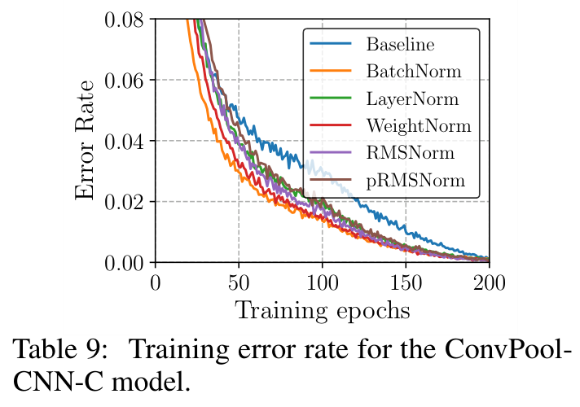
Training error rate for the ConvPool-CNN-C model.
Click to zoom · Full PDF page
Table 9（原文编号）— 实际为训练曲线。 横轴 epoch，纵轴 training error，越低越好。BN 收敛最好，各种 Norm 比 Baseline 快；训练曲线上的优势不保证测试 error 同样更低。原文 §6.4 叫它 “Figure 9”，但 PDF caption 及 TeX table 环境实际使它编号为 Table 9；本文按 PDF 原样保留，不自行重排后面的 Table 10。

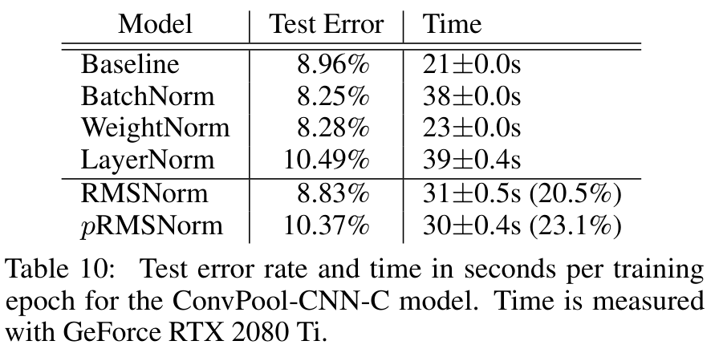
Test error rate and time in seconds per training epoch for the ConvPool-CNN-C model. Time is measured with GeForce RTX 2080 Ti.
Click to zoom · Full PDF page
Table 10 · 完整行列转录（分组标题展开，空白值按原文保留）
| Model | Test Error | Time |
|---|---|---|
| Baseline | 8.96% | 21±0.0s |
| BatchNorm | 8.25% | 38±0.0s |
| WeightNorm | 8.28% | 23±0.0s |
| LayerNorm | 10.49% | 39±0.4s |
| RMSNorm | 8.83% | 31±0.5s (20.5%) |
| pRMSNorm | 10.37% | 30±0.4s (23.1%) |
Table 10 — 最强质量对照是 BatchNorm。 BN test error 8.25%，WeightNorm 8.28%，均优于 RMS 8.83%；RMS 优于 LN 10.49%。RMS 相对 LN 降 1.66 个百分点，error 相对减少 15.82%；时间 39→31 s，降幅 20.51%、1.258×。RMS 相对无 Norm 的 8.96% 只改善 0.13 个百分点，相对减少 1.45%，不能写成原文正文的 “0.013%”。
pRMS 10.37% 比 RMS 多 1.54 个百分点的错误，只省 1 s/epoch（相对 RMS 3.23%）；原文所谓 “further 2.6%” 是二者相对 LN 降幅 23.1% 与 20.5% 的差，约 2.6 个百分点，不是 pRMS 相对 RMS 的时间降幅。相同表还显示 Baseline 学习率 0.0003、其余 0.003，比较质量时必须承认这一混杂因素。
7. Conclusion and Future Work：是可用替代，也存在明确边界
原文 §7，PDF p.9。 作者认为 RMSNorm 保留有用的尺度不变性，省去中心化的开销；NLP 任务中质量相近，时间改善依赖框架、硬件、架构及其他模块成本。pRMS 的理论省算没有稳定兑现为更快，因此低层实现优化留待未来。
作者称 drop-in replacement，指结构形状与部署接口容易替换。已有 LayerNorm checkpoint 的函数一般会改变：a/r 与 (a−μ)/σ 不相同，bias 的保留也不保证等价，所以普通 pretrained LLM 不能只换类名就声称质量无损。
原文展望其他范数与 BatchNorm 简化，也预期能与低精度和 kernel fusion 叠加。这是合理方向；但实际叠加幅度仍取决于融合后哪个成本消失、哪个成本留在关键路径。以下独立审计和 2026 年更新会继续验证这点。
Appendix A：配置细节决定实验能否复现
A.1 Machine Translation
原附录 A.1，PDF pp.13–14。 WMT14 4.5M aligned sentence pairs；newstest2013 选择模型，newstest2014／2017 测试；32k BPE merge；最大似然训练、label smoothing 0.1。Case-sensitive detokenized SacreBLEU，原签名：
BLEU+case.mixed+lang.en-de+numrefs.1+smooth.exp+test.wmt14+tok.13a+version.1.2.12
BLEU+case.mixed+lang.en-de+numrefs.1+smooth.exp+test.wmt17+tok.13a+version.1.2.12
RNNSearch：最大 source/target length=80，embedding=512，hidden=1024，batch=80，Adam lr=1e−4。一般权重为标准正态缩放 0.01，方阵随机正交。Transformer：D=512，FFN=2048，8 heads，batch=25000 source/target tokens，Adam β₁=0.9、β₂=0.98，inverse-square-root schedule，warmup=4000，Xavier 初始化，300k steps。

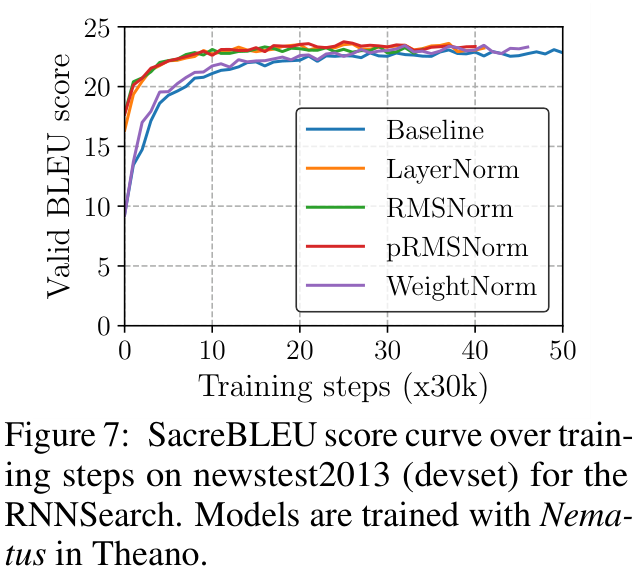
SacreBLEU score curve over training steps on newstest2013 (devset) for the RNNSearch. Models are trained with Nematus in Theano.
Click to zoom · Full PDF page
Figure 7 — Theano RNNSearch 的 WeightNorm 比较。 横轴 steps，纵轴 dev BLEU。WeightNorm 收敛慢于 LN／RMS／pRMS；附录给出 test BLEU 21.7／23.5，质量未超过本文主要归一化方案。PyTorch 官方 WeightNorm API 的尝试导致 OOM，作者未给完整 memory trace；这是一条具体实现失败记录，不能等价于 WeightNorm 必然比 RMS 使用更多激活内存。
A.2 CNN/Daily Mail Reading Comprehension
使用公开 Theano 模型，CNN 的 top4 setting；只在 LSTM 内使用 RMS 来匹配 LN placement，hidden=240，Adam batch=64、lr=8e−5，Xavier 初始化，方阵进一步正交。未披露总参数、全训练 tokens、完整 test accuracy 与质量 seed 方差。不能把任务标题扩大成 CNN+Daily Mail 上全部配置的验证。
A.3 Image-Caption Retrieval
VGGNet 10crop 图像特征；word embedding=300，GRU hidden=1024；不同参数使用 Xavier、Gaussian、orthogonal 初始化。Adam batch=128、lr=1e−3。训练 ranking loss，不改变 loss 以适配 RMS。最终 R@K 为 5 个 split 的平均，每 split 1000 images／5000 captions。
A.4 CIFAR-10 Classification
沿 width、height 归一化，沿 channel affine；Adam batch=100。Baseline lr=0.0003，其余 lr=0.003；pRMS=12.5%。原文未完整披露 RMS 的累加精度、epsilon 放置、warmup、CUDA/cuDNN 版本和所有 task 的 batch timing 边界。因此复现时必须使用代码补足，同时保留代码与论文不一致之处。
Experiment Audit：哪些 Claim 被支持？
| Claim / 审计项 | 论文证据 | 判断与缺口 |
|---|---|---|
| 不中心化仍能训练有效 | RNN、Transformer、CNN QA、COCO、CIFAR | 支持跨多任务可用；不能证明所有模型都不需要中心化 |
| 质量与 LN 相近 | BLEU、validation error、R@K 多列接近 | 整体支持；缺 quality seed variance，非正式非劣效检验 |
| 运行更快 | 3 次 timing、3 框架、3 GPU 场景 | 支持所测环境；没有同等融合 kernel 与现代精度的严格对照 |
| pRMS 可更快 | Table 4、8、10 | 非一致，Table 3 Theano 更慢；CIFAR 有明显 error 代价 |
| 梯度有尺度性质 | Eq.8–10 | 理想局部代数成立；epsilon、Adam、decay、残差需另分析 |
| 初始化更鲁棒 | center=0.2 的 Figure 4 | 有限扰动实证；缺多尺度、多均值、多 seed 网格 |
| 显存、通信、KV 节约 | 无专门测量 | 不能声称改变 KV cache 或 attention 可见范围 |
| 比较是否公平 | 同框架主要对照，附录承认细节差异 | BN cuDNN；CIFAR lr不同；跨框架与 existing work 不可直接归因 |
时间的 standard deviation 来自三次计时，不能当成 BLEU 或检索质量的置信区间。三次测量也不足以完整描述延迟尾部。正文没有模型参数总量、完整训练 token 预算和每任务精度配置；将这些标成未披露比用现代模型习惯填空更可靠。
如果继续复现，我会做四项有辨别力的实验：相同 seed／数据顺序／优化器下 LN 与 RMS 多 seed 质量；同 dtype、epsilon、kernel 优化等级下的前向／反向 microbenchmark；按 hidden 分布与通道排列检验 pRMS 的 prefix bias；按 time-to-target-quality 而非只用固定 steps 评价收益。它们分别区分训练机制、实现成本、估计假设和真实预算。
Method Reconstruction：从 token 到 kernel，再到 TTFT／TPOT
一个独立 RMSNorm 层的输入 X=[B,T,D]，输出 Y 同 shape；learnable gain=[D]，有些实现还带 bias=[D]，Llama 通常无 Norm bias。核心参数数目 D（gain-only）或 2D（gain+bias）；RMS 不改变 attention 参数、KV head、cache shape、上下文可见性，也不提供专门的训练 loss。
前向是每行 D 个平方加法归约、一次 rsqrt，以及 D 个乘缩放与 D 个 gain 乘法，整体 Θ(MD)。LayerNorm 也为 Θ(MD)，差异在常数与归约策略，不是渐近复杂度。Welford 能同时估计 mean/variance，不能武断说 LN 必须两次 HBM 读而 RMS 必须一次。
训练 backward 要保存或重算输入、inverse RMS，gain 的梯度沿 M 归约；通常对统计值采用 FP32。每 token 存一份 FP32 inverse RMS 为 4M bytes，输入若本来需要保留则是 MDs bytes。实际 autograd、activation checkpoint 和融合策略决定增量峰值内存，不能把理想值当 cuda memory peak。
独立前向在理想数据复用下需要读 X、写 Y，共 2MDs bytes；gain 至少 Ds bytes，如果每行重载或 cache 复用失效则更多。朴素分解会写 x²、统计 tensor、normalized X 等中间张量，增加 HBM 流量。Fuse residual+RMS、RMS+linear 或将 gain 折入权重，有机会省掉中间 materialization；原 2019 实验没有这类逐项测量。
AGENT-CREATED / IO & AMDAHL CALCULATOR
算子快两倍，模型能快多少？
独立前向的理想读写量，不含中间张量、反向、每行重读 gain 或 cache 失效。
即使 Norm 成本完全消失，f=10% 的端到端上限也是 1.111×。这些是解析估算，非 GPU/NPU 实测。
该计算器给的是理想 IO 下界与 Amdahl 估算。调整行数 M、hidden D、激活字节数，以及原 Norm 的模型耗时占比 f、算子加速倍数 k。端到端倍数为 1/(1−f+f/k)。如果 f=10%、k=2，仅有 1.053×；即便 k→∞，上限也只有 1.111×。读者可以据此判断 kernel 新闻是否足以改变实际 runner 的 TPOT。
Prefill 的 M=B×T 较大，许多行并行，关注带宽、寄存器和 occupancy；decode 的 M 通常接近 active batch，单行 D 较宽、小 batch 下 launch 与序列依赖可能更显著。TTFT 包括整段 prefill、投影、attention 与首 token 路径，TPOT 包括逐步 decode 整链路，不能由 RMS 单 op 时间直接代替。端侧 HTP／NPU 上还需核验图编译是否融合、FP32 统计是否回退 CPU，以及跨设备同步是否吞掉收益。
Related Work & Technology Evolution：2016 到 2026
下面均为外部一手资料，不是原论文的实验结果。时间线表达机制演进和采用关系，不宣称每个节点严格替代前一个。
| 工作 / 年份 | 核心思想 | 优势 | 局限 | 与 RMSNorm 的关系 |
|---|---|---|---|---|
| Layer Normalization / 2016 | 单样本 feature 维均值与方差 | 不依赖 batch，适合序列 | 中心化与归约成本；placement 敏感 | 被拆分验证的直接前身 |
| Weight Normalization / 2016 | 分离权重长度和方向 | 重参数化，不用 activation batch stats | 不等价于单 token 尺度控制 | 原附录独立路线对照 |
| Group Normalization / 2018 | 分组 feature statistics | CV 小 batch 可用 | 轴与分组决定效果 | 说明“归一化轴”不可忽略 |
| Fixup / 2019 | 初始化与参数尺度安排 | 某些残差网络无需 Norm | 依赖架构与初始化规则 | 从初始化而非每步统计解决稳定性 |
| RMSNorm / 2019 | 用 RMS 保留尺度不变性 | 简单、质量／速度取舍可用 | 无平移不变性；p 估计风险 | 本文 |
| Pre-CRMSNorm / 2023 | 转换特定 Pre-LN 架构为等价 RMS／压缩表示 | 特定条件下等价，报告 1–10% 提效 | 转换前提严格，不是任意换层 | 解释为何 mean 方向在特定网络中可消去 |
| Llama / 2023 官方实现 | 在实际 decoder 用 RMSNorm | 大模型采用；FP32 statistics 明确 | 采用不等于独立因果消融 | 工业模型证据 |
| FlashNorm / 2024，v5 2026 | RMS 与后续 linear 的联合重写／融合 | 减少中间物化与 pass | 依赖投影、权重处理、融合与硬件 | 把层级简化继续推进到 IO |
| Transformers without Normalization / 2025 | Dynamic Tanh，α·x 后逐元素 tanh 与 affine | 不用激活统计归约 | 含非线性，替换需重新训练／验证 | 另一条去统计路线，不等价 RMS |
| PyTorch 2.11 / 2026 官方 benchmark | torch.compile 归约和 mixed-order 优化 | 常见 shape 接近专用实现 | 硬件、dtype、shape、方向敏感 | 当前应比较优化后的算子 |
| When Does Removing LayerNorm Help? / 2026 preprint | 检验 DyT 激活饱和与训练预算，另含 64M RMS 对照 | 提醒去统计路线依赖数据／模型规模 | 单一新预印本，非广泛共识 | RMS/LN 是对照；不能当成两者孰优的定律 |
Pre-CRMSNorm：架构等价不等于单算子等价
Jiang et al., 2023，本文核验 v2。作者从 Pre-LN Transformer 的整体结构出发，分析可压缩的均值方向并构造等价转换；报告具体实验中 1–10% efficiency improvement。它的价值是把“经验上可替代”推进到满足条件的结构等价。不能拿这项结果证明普通含非零均值输入的 LN(a)=RMS(a)，更不能未经转换就加载任意 checkpoint。是否有 bias、affine、residual 与参数约束，必须按该文规则核对。
Llama：实际代码怎么选？
官方 Llama 实现 在 _norm 中先 x.float()，计算 x * rsqrt(mean(x²)+eps)，再转回输入类型并乘权重。统计在 FP32、epsilon 在 sqrt 内、Norm gain-only，这些都属于代码行为；原 2019 数学式没有描述这些数值选择。
Llama 的采用证明 RMS 能用于真实大规模 decoder，不能单独隔离它相对 LN 的收益，因为模型数据、FFN、位置编码等也同时不同。有关 RoPE、MHA／MQA／GQA 和 IO-aware attention 的站内文章，是与 RMS 同处一条推理链路的互补阅读。
Dynamic Tanh：不用 reduction 的代价是什么？
Zhu et al., CVPR 2025，核验 v2。DyT 使用 γ * tanh(αx) + β，用可学习 α 调整输入尺度；避免 mean/RMS 的样本统计。tanh 是逐元素非线性，存在饱和，其 Jacobian 和 RMS 的全通道耦合不同。论文在自己的训练与视觉模型基准中评估替代，可视为新的路线；不是一个能保持任意 RMS checkpoint 函数的恒等变换。
Current State / SOTA：截至 2026-10-27 的条件化判断
“哪种 normalization 是 SOTA”没有跨所有模型的唯一答案。这里把模型质量、kernel 速度与编译器能力分开，给出日期、基准和比较边界。
| 证据 | 截止与具体条件 | 可支持的结论 | 不能支持的结论 |
|---|---|---|---|
| PyTorch 官方 normalization 性能文 | 2026-04-08；2.11，H100/B200；与 2026-03-24 的 Quack trunk 对照 | 常见前向 shape 的 compile 已可接近专用 kernel | 所有 shape／backward／端到端都领先 |
| MixOrderReduction 文中实验 | B200 750W、CUDA 12.9、BF16，文中 late-2025 benchmark | 报告最高约 17.07× eager、1.45× Liger、1.34× Quack 的特定 shape 收益 | 这些倍数是整个 LLM 训练或 TPOT 提升 |
| Quack 公开实现 | 本次核验 HEAD 77a750c；H100、B200/B300、RTX 50，CUDA 12.9+ 要求 | 有可检查的高效 GPU 归约代码与硬件范围 | 能自动用于旧 GPU 或 HTP／NPU |
| FlashNorm v5 | 2026-04-24 更新；核验论文的 fused RMS+linear 推导 | 高效实现可以跨相邻算子消除物化 | 独立 RMS microbenchmark 的排序可直接预测所有模型 |
| 2026 compute-limited 预印本 | arXiv:2604.23434v1；全部实验处于 T/P<1.84 的预算范围 | DyT 收益随数据／容量反转；64M RMS 与 LN 结果相差不足 0.7% | 把 1.84 当成优劣分界，或宣称该文证明 LN 全面优于 RMS |
PyTorch 官方文章还给出非 power-of-two N=384、较大 N 及 H100 的特定不足；forward 与 backward 不能互相替代。RMS 性能是一个 shape family 上的分布，应记录 [M,D]、dtype、GPU、功率、编译选项与 launch 方式。本文没有在这些 GPU 上重跑新论文数字，它们是官方／论文报告值，与本地代数和页面 QA 明确区分。
2026 年预印本的完整标题为 When Does Removing LayerNorm Help? Activation Bounding as a Regime-Dependent Implicit Regularizer（Lucky Verma）。其主要干预是 DyT 替换 LayerNorm；RMS 只在 64M 设置中作为第二基线，文中说明该对照为 2 seeds。它报告 RMS 与 LN 的结果在 0.7% 内，DyT 的效益则随数据预算改变。T/P<1.84 是全部实验的覆盖范围，不是归一化优劣阈值。 这是对“去统计就能无条件获益”的提醒；单一预印本仍需独立复现。
对于实际选型，我会先看模型质量与 checkpoint 语义，然后在目标设备以真实 [M,D] 测相同优化等级的 forward/backward，最后接入完整 runner 看 TTFT、TPOT 与峰值内存。若 norm 只占总时间很小一部分，优先解决更大成本；若 FP32 统计跨设备回退，优先审计调用链与同步。
Implementation Notes：epsilon、精度与导出不能随意换
原论文、原作者代码与现代实现的差异
| 实现 | 分母／关键行为 | 迁移时的影响 |
|---|---|---|
| 2019 论文 | sqrt(mean(x²))；p 用 ceil(Dp) | 零向量未定义，代数讨论属理想形式 |
作者 PyTorch rmsnorm_torch.py |
sqrt(mean(x²)) + eps，默认 eps=1e−8；p 用 int(D*p) |
epsilon 在 sqrt 外；floor 和论文 ceil 不同；p=0 可产生空 slice |
| 作者 README TensorFlow 例子 | sqrt(mean(x²)+eps)，例中 eps=1e−5 |
与作者 PyTorch 默认也不严格相同 |
| Llama 官方代码 | FP32 累加，sqrt 内 eps，再 cast 并乘 gain | tiny input、BF16 rounding、scale 不变性近似程度不同 |
| PyTorch 2.11 RMSNorm docs | 默认 eps 使用 opmath 类型精度，FP16/BF16/FP32 对应 FP32 epsilon | 应显式写 eps，不凭记忆套旧版默认 |
作者代码本次核验 commit 2e726f1a3f106bb719056422f4f9b6aca03d3ce6。PyTorch 文档本次检索的是 2.11；不同版本不能假设默认行为相同。pRMS 应显式验证 0<p≤1、k≥1，避免空归约和 NaN。
下面是 Agent-created reference，遵循 sqrt 内 epsilon 与 FP32 累加；用于说明接口，不声称 bitwise 等同所有 kernel：
def rmsnorm(x, weight, eps=1e-6):
# x: [..., D], weight: [D], output: same shape/dtype as x
xf = x.float()
inv_rms = (xf.square().mean(dim=-1, keepdim=True) + eps).rsqrt()
normalized = (xf * inv_rms).to(x.dtype)
return normalized * weight
它的输出 cast 与 gain 的计算顺序必须与目标实现一致；一些融合算子在 FP32 中连 gain 一起做完再 cast，会产生不同 rounding。gain 若是 FP32 还可能触发 dtype promotion。模型导出、量化与 Native runner 需要核验实际张量 dtype，而不是只看 Python 的输入 dtype。
量化和端侧映射
平方、归约、rsqrt 对范围和精度较敏感。FP16 在大输入平方时可能溢出，BF16 的尾数较短；内部 FP32 累加通常更稳。INT8／INT4 权重模型不等于 Norm 的 activation statistics 也能无损整数化；特别是 pRMS 的小分母会放大误差。
gain 可在特定连接中折入后续线性权重，例如 W·diag(g)，但要同步更新量化 scale、bias 和校准；归一化的输入依赖分母不能作为常量全部折叠。若 graph 导出把 sqrt 内 epsilon 改到 sqrt 外，或者 Norm axis 从 D 变为 channel／spatial，函数会发生实质变化。
我会用真实、多样化 hidden activation 校准，记录每层 RMS、mean、outlier、near-zero 与饱和比例；对比框架 FP32、导出浮点、量化、设备执行四个阶段的 per-layer error。出现精度下降时先定位是哪一步的分母、cast 或 scale 改变，而不是把问题简单归因给小模型能力。
HTP/NPU 的内存验证用实际 dmabuf_dump 与 CPU VmHWM 分开统计；理论 4M bytes 统计量不代表设备整体物理峰值。常驻 Native runner 下测热态 TTFT/TPOT，避免工具冷启动和 RPC 干扰，并确认 prefill 与 decode 首 token 的 Norm 数值路径一致。
My Takeaways：最值得迁移的是验证方式
以下为本文独立判断。 新颖性来自机制拆分而非复杂模块：把 LayerNorm 中心化与尺度约束分开，得到一个简单、容易实现、后来得到广泛采用的方法。正确性方面，核心代数扎实，但需要补齐正尺度、非零分母与 epsilon 条件；梯度分析支持局部性质，不能代替完整优化定理。
实验覆盖 RNN、self-attention、CNN、跨模态任务与多个框架，这比只测一种网络更有说服力。弱点在于缺少多 seed 质量误差、严格同优化等级 kernel 对照、训练预算的完整披露，以及不同轴／学习率等混杂因素。可复现性受公开代码帮助，但论文与代码的 epsilon、ceil/floor 差异仍需记录。
工程复杂度低，理论成本 Θ(MD)，扩展到大模型不增加 routing、通信或 KV；反过来说，它也不直接减少这些大项。gain-only 的参数节约很小，主要收益是 activation 统计与跨算子融合。硬件依赖表现在带宽、归约、布局与 launch，而不只是标量 FLOPs。
隐藏取舍： 保留均值方向使信息与噪声都可能留下；pRMS 的前缀估计对排列敏感；小分母可能放大异常通道；数值稳定 epsilon 会让“精确不变”变成近似。已经训练好的 LN 模型需要函数与质量验证，不能用接口相同代替语义相同。
值得继续回答的问题有三个：哪些架构真正利用均值方向，哪些可以满足 Pre-CRMS 的等价条件？在更完整的训练预算下 LN／RMS 的接近程度及 DyT 的收益反转是否复现，是否依赖数据与优化器？在目标 HTP/NPU 中最有价值的是省统计、融合 residual+Norm、融合 Norm+linear，还是避免一次 CPU fallback？
我的优先改进方向是将分布诊断与 per-op 调用链连起来：发现某层近零 RMS 或巨大 prefix bias 后，再检查量化分母、精度转换与设备回退；发现 kernel 加速后，再用 Amdahl 和真实 TTFT/TPOT 判断收益。论文 Figure 1 的“step 与 time 分开看”直到今天仍然适用。
Related Readings
Transformer：归一化在原始 encoder／decoder 中的 placement。
FlashAttention：减少 IO 与中间张量的另一条路径。
RoFormer：同一 decoder 中位置编码与数值实现。
MQA · GQA：KV 状态共享与 normalization 是不同优化轴。
References & Source Record
所有外部事实核验截至 2026-10-27。原图／原表从本地 1910.07467v1.pdf 无损 PNG 提取（4× PDF point resolution），同时保留 PDF、TeX、原始 figure PDFs 与资产清单。静态 MathML 为可选择公式；新增示意与交互均标 Agent-created，不代替原始证据。
| 类型 | 来源与用途 |
|---|---|
| Original Paper | Root Mean Square Layer Normalization, 1910.07467v1；全文、7 Figures、10 Table 编号、Eq.1–10、附录 |
| Official Code | bzhangGo/rmsnorm；固定版本 PyTorch |
| Related Paper | Layer Normalization, 1607.06450；Weight Normalization, 1602.07868；Group Normalization, 1803.08494；Fixup, 1901.09321 |
| Follow-up | Pre-CRMSNorm, 2305.14858v2；FlashNorm, 2407.09577v5；Transformers without Normalization, 2503.10622v2 |
| Adoption | Meta Llama model.py |
| Current Official Evidence | PyTorch normalization performance, 2026-04-08；PyTorch 2.11 RMSNorm docs；Quack |
| New Preprint / 有限证据 | arXiv:2604.23434v1；compute-limited regime，单一来源，不作为通用选型结论 |
Initial publication / Last updated：2026-10-27。质量检查分为原文准确性复核与页面可读性复核；发布后另检查 GitHub Pages 的真实资源、公式、图表与交互。